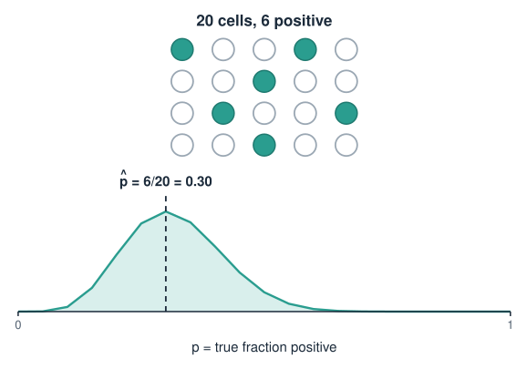
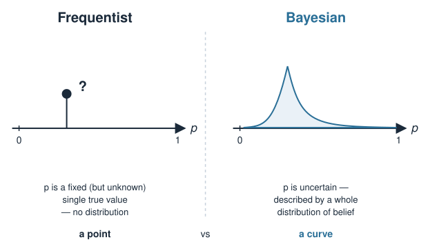
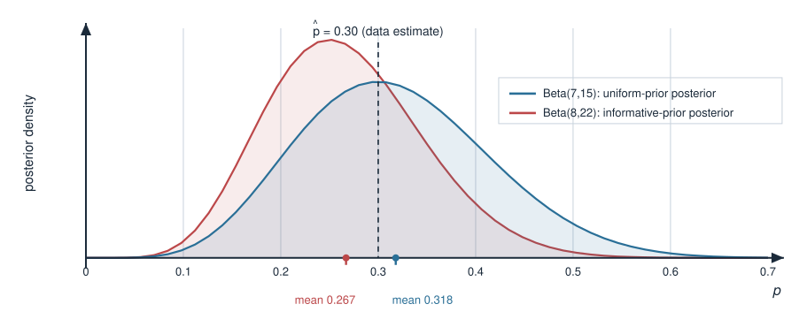
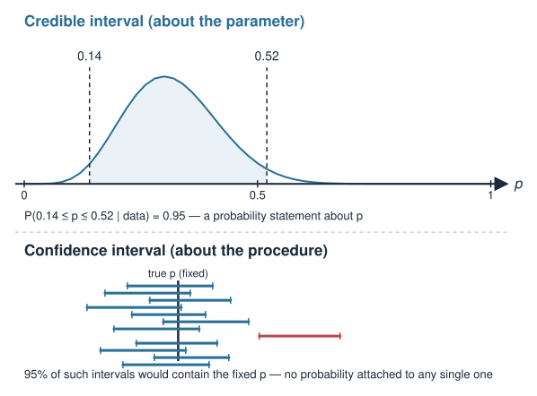
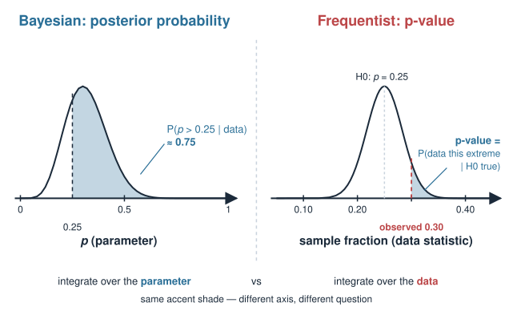

Your earlier statistics was almost certainly frequentist: fixed (but unknown) parameters, p-values, confidence intervals. Today we meet the other big framework — Bayesian reasoning — and see how they differ.
Probability as a degree of belief, updated by data — not just a long-run frequency.
Bayes’ rule in one line: \(\text{posterior} \propto \text{prior} \times \text{likelihood}\).
Frequentist vs Bayesian: fixed parameters + p-values vs distributions of belief + credible intervals.
One worked biology example: estimating a proportion (fraction of cells expressing a marker) with a prior.
Why a biologist might want this: honest uncertainty, using prior knowledge, and a natural fit for hierarchy.
This is a concept and intuition day. The maths stays light; the goal is to think in the Bayesian way and read a posterior.
A note on this block
Provisional block
This Bayesian statistics block is provisional. It may be moved to a later, dedicated statistics / machine-learning course rather than staying in this linear-algebra-and-stats course. Treat it as a self-contained introduction: nothing later in this course hard-depends on it.
We still include it here because Bayesian thinking underlies a lot of modern omics analysis (differential expression, variant calling, hierarchical models), and the contrast with frequentist reasoning sharpens both.
A biology picture first
You stain a population of cells for a marker and count, under the microscope, how many are positive. Out of 20 cells, 6 are positive.
Your instinct (frequentist): the fraction is \(\hat p = 6/20 = 0.30\). Done.
But you have only 20 cells. How sure are you? Could the true fraction be 0.2? 0.45?
And you are not starting from nothing: in three previous experiments this marker sat around 20%. Should that count?
Frequentist analysis gives you a single number plus a confidence interval and ignores the earlier experiments. Bayesian analysis gives you a full distribution of belief over \(p\) and lets you fold in what you already knew.

Two meanings of “probability”
The split between the two schools comes from what the word probability even means.
Frequentist
Bayesian
Probability is…
a long-run frequency
a degree of belief
The parameter \(p\) is…
fixed, just unknown
uncertain — described by a distribution
Data is…
random (repeatable)
the fixed thing you actually saw
A result is…
a point estimate + CI, a p-value
a posterior distribution
Frequentist question: “If \(p\) were really 0.2, how surprising is my data?” Bayesian question: “Given my data, what should I now believe about \(p\)?”

Bayes’ rule
Bayes’ rule is just the definition of conditional probability, rearranged. For a hypothesis \(H\) (a value of \(p\)) and observed data \(D\):
\[P(H \mid D) = \frac{P(D \mid H)\,P(H)}{P(D)}\]
Read left to right:
\(P(H)\) — the prior: what you believed about \(H\)before the data.
\(P(D \mid H)\) — the likelihood: how probable the data is if\(H\) were true.
\(P(H \mid D)\) — the posterior: your updated belief after seeing the data.
\(P(D)\) — the evidence: a normalising constant so the posterior sums to 1.
Posterior \(\propto\) prior \(\times\) likelihood
The denominator \(P(D)\) does not depend on \(H\) — it is the same for every hypothesis. So the shape of the posterior is fixed entirely by the numerator:
(The mean of \(\text{Beta}(\alpha,\beta)\) is \(\alpha/(\alpha+\beta)\).)
The informative prior pulls the estimate down toward the earlier experiments — and with only 20 cells, that pull is real. Collect 200 cells and both posteriors would sit almost on top of the data.

Credible interval vs confidence interval
Bayesian uncertainty comes straight from the posterior. A 95% credible interval is any interval holding 95% of the posterior probability:
You are allowed to say the honest sentence: “there is a 95% probability that \(p\) lies in this interval.”
A frequentist 95% confidence interval does not mean that. It means: if you repeated the whole experiment many times, 95% of the intervals so constructed would contain the true fixed \(p\). Any single interval either contains \(p\) or does not — no probability attached.
Credible interval
Confidence interval
Statement about
the parameter
the procedure
“95% probability \(p\) is inside”
✓ allowed
✗ not allowed

p-value vs posterior probability
Suppose you care whether the true fraction exceeds 25%.
Frequentist: set up \(H_0: p = 0.25\), compute a p-value = probability of data at least this extremeif \(H_0\) were true. A small p-value means “the data would be surprising under \(H_0\).” It does not tell you \(P(H_0)\).
Bayesian: just read it off the posterior: \[P(p > 0.25 \mid \text{data}) = \int_{0.25}^{1} \text{Beta}(p;\,7,15)\, dp\] a direct probability that the hypothesis is true, given your data.
The Bayesian answers the question people think a p-value answers.

The same computation in R
Everything above is a couple of built-in functions. (Static examples — nothing to install.)
k <-6; n <-20# Frequentist point estimatep_hat <- k / n # 0.30# Bayesian update with a uniform prior Beta(1, 1)a0 <-1; b0 <-1a <- a0 + k # 7 (prior successes + observed)b <- b0 + (n - k) # 15 (prior failures + observed)a / (a + b) # posterior mean -> 0.318qbeta(c(0.025, 0.975), a, b) # 95% credible interval -> ~0.14 .. 0.521-pbeta(0.25, a, b) # P(p > 0.25 | data) -> ~0.75
# An informative prior Beta(2, 8) (earlier experiments, ~20% positive)a0 <-2; b0 <-8a <- a0 + k # 8b <- b0 + (n - k) # 22a / (a + b) # posterior mean -> 0.267
Why a biologist might go Bayesian
Honest uncertainty. You get a full posterior, not a lone point estimate — and a credible interval you are actually allowed to interpret as “where the parameter probably is.”
Use what you already know. Prior experiments, known biology, or literature values enter formally through the prior instead of being ignored or hand-waved.
Small samples behave sensibly. With few cells the prior gently regularises the estimate; with many cells the data takes over automatically.
Natural hierarchy. Genes within pathways, cells within patients, patients within cohorts — Bayesian hierarchical models let lower levels “borrow strength” from the group, which is exactly how modern tools shrink noisy per-gene estimates in differential expression.
Being fair to the frequentist
Bayesian is not automatically “better.” Trade-offs:
The prior is a choice, and a bad or overconfident prior biases the answer. You must be able to defend it — and check how much it matters (sensitivity analysis).
Frequentist methods are fast, standard, and prior-free — for a large, clean dataset the two usually agree, and a t-test is simpler than a model.
Computation. Only lucky (conjugate) cases give a formula; realistic models need MCMC sampling — more machinery, more that can go wrong.
Reproducibility. A frequentist pipeline has fewer subjective knobs, which some fields prefer.
Rule of thumb: lots of clean data → they agree; little data, strong prior knowledge, or nested structure → Bayesian earns its keep.
Summary
Concept
Key fact
Probability
frequentist = frequency; Bayesian = degree of belief
Parameter \(p\)
frequentist: fixed unknown; Bayesian: has a distribution